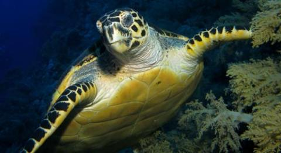

Snakes

Diet
Snakes consume a variety of items including termites, rodents, birds, frogs, small deer and other reptiles. Snakes eat their prey whole and are able to consume prey three times larger than the diameter of their head because their lower jaw can separate from the upper jaw. To keep prey from escaping, snakes have rear-facing teeth that hold their prey in their mouths.
Venomous snakes inject their prey with venom, while constrictors squeeze their prey. They do not need to hunt everyday. Anacondas and pythons can survive for up to a year without food after feeding. Snakes hunt mostly at night.
Range
Snakes are found throughout the world except Antarctica, Iceland, Ireland, Greenland and New Zealand. Most snakes are found in tropical regions. Snakes are found in many habitats including in the water, forests, deserts and prairies.
Behavior
Often observed flicking its tongue, snakes use their forked tongue to smell the air. Snakes are ectotherms, meaning they must regulate their body temperature externally by sunning themselves or retreating to cool, shaded areas. Snakes hibernate during the winter. Snakes must shed their skin three to six times per year.
Reproduction
Most snake species lay eggs, but some species give birth to live young. Snakes lay their eggs in a warm location. With the exception of some python species, eggs and young are not cared for by the male or female.
Turtles

Diet
What sea turtles eat depends on the subspecies, but some common items include jellyfish, seaweed, crabs, shrimp, sponges, snails, algae and mollusks.
Population
It is difficult to find population numbers for sea turtles because male and juvenile sea turtles do not return to shore once they hatch and reach the ocean, which makes it hard to keep track of them.
Range
Sea turtles are found in all warm and temperate waters throughout the world and migrate hundreds of miles between nesting and feeding grounds. Most sea turtles undergo long migrations, some as far as 1400 miles, between their feeding grounds and the beaches where they nest.
Behavior
Sea turtles spend most of their lives in the water, where not much information can be gathered on their behavior. Most of what is known about sea turtle behavior is obtained by observing hatchlings and females that leave the water to lay eggs. Sea turtles, like salmon, will return to the same nesting grounds at which they were born. When females come to the shore they dig out a nest in the ground with their back flippers, bury their clutch of eggs and return to the ocean. After hatching, the young may take as long as a week to dig themselves out of the nest. They emerge at night, move toward the ocean and remain there, solitary, until it is time to mate.
Reproduction
Temperature: Temperatures of the sand where the turtles nest determine the sex of the turtle: below 85 degrees Fahrenheit (30ºC) is predominately male; above 85 degrees Fahrenheit (30ºC) is predominately female.
Mating Season: March-October depending on the species.
Gestation: 6-10 weeks.
Clutch size: Between 70-190 eggs depending on the species.
When the young hatch out of their eggs, they make their way to the ocean. Few survive to adulthood.
Frogs
Diet
A frog mainly lives on insects and small animals like earthworms, minnows and spiders.
Population
There are approximately 4,740 species of frogs around the entire world. There are about 90 species of frogs in the United States. Unfortunately, about 120 amphibian species, including frogs, toads and salamanders, have disappeared since 1980. Historically, one species of amphibian would disappear every 250 years.
Range
Frogs can be found on every continent in the world except Antarctica. However, the highest concentration of frogs is found in warmer tropical climes.
Behavior
Frogs are known as indicator species and can give scientists valuable insight into how an ecosystem is functioning. Because they are predators and prey many animals are affected by them, frogs provide insight into the health of the ecosystem.